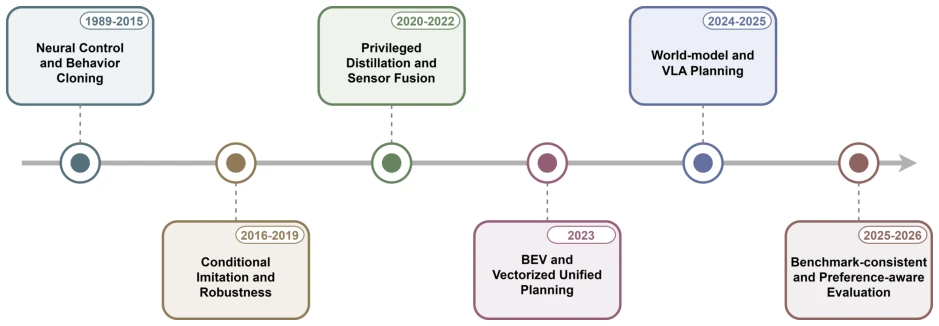
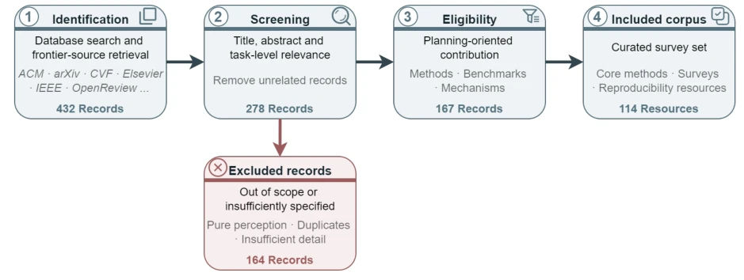
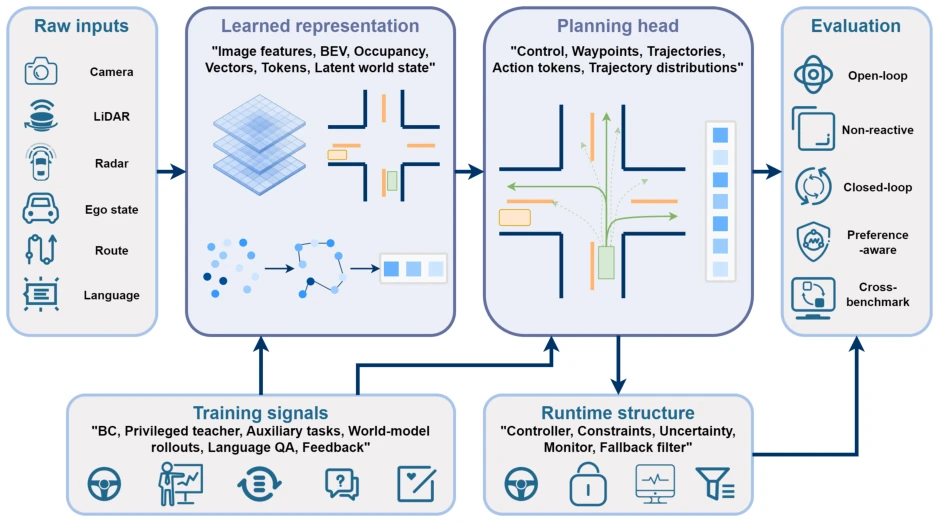
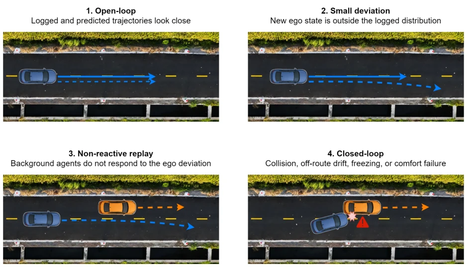

Planning-Oriented End-to-End Autonomous Driving: Architectures, Evaluation, and Emerging Paradigms
Yanchen Guan, Xingcheng Liu, Bin Rao, Chengyue Wang, Guofa Li, Yunjian Li abspdf
论文点评Review
这篇综述给“端到端”自动驾驶圈泼了盆冷水。作者没整新模型，而是把这几年“端到端”三个字被滥用得面目全非的现象给捋了一遍。核心观点很犀利：别管架构里有没有中间层，关键看是不是为了“规划”服务的。吐槽点在于现在太多论文拿 open-loop 的位移误差当护身符，实际上车了可能直接撞墙。不过分类学做得挺细，把 BEV、向量、世界模型都塞进了四个轴里，算是给后来人省了点整理文献的功夫。就是这“规划导向”的定义有点宽，感觉啥都能往里装，但确实指出了评估协议才是硬伤。它提醒我们，架构进步若没有基准一致的评价，就像没装刹车的跑车，看着快，一刹车就散架。此外，文中对 VLA 和 World Model 的讨论也戳破了“大模型万能论”的泡沫，指出语义对齐不等于安全驾驶，这点非常清醒。
This review pours cold water on the "end-to-end" autonomous driving community. The authors did not develop new models, but rather reviewed the phenomenon where the term "end-to-end" has been abused to the point of being unrecognizable in recent years. The core viewpoint is sharp: regardless of whether there are intermediate layers in the architecture, the key is whether it serves "planning". The critique lies in that too many papers now use open-loop displacement error as a shield, but in actual deployment, they might crash directly into a wall. However, the taxonomy is quite detailed, incorporating BEV, vectors, and world models into four axes, saving later researchers some effort in organizing literature. The definition of "planning-oriented" is somewhat broad, feeling like anything can fit in, but it does indeed point out that evaluation protocols are the real flaw. It reminds us that if architectural progress lacks consistent benchmark evaluation, it is like a sports car without brakes, looking fast but falling apart when braking. Additionally, the discussion on VLA and World Models in the text also bursts the bubble of "large model omnipotence", pointing out that semantic alignment does not equal safe driving, which is very clear-headed.
Existing end-to-end autonomous driving research is too chaotic. Previously it was modular, now end-to-end is popular, but the "end-to-end" definition has been generalized. Many methods merely add intermediate representations yet claim to be end-to-end. More importantly, evaluation standards are not unified; open-loop trajectory matching can fool people but not cars. Citation [12] points out that ego status may mask problems. Citations [14][15][16] mention new benchmarks such as nuPlan, Bench2Drive. There is a need to connect architecture, evaluation, and foundation model paradigms. Traditional modular interfaces are fragile [1], while end-to-end attempts to solve this but introduces new distribution shift problems [37]. This paper aims to establish a planning-oriented classification to resolve the disconnection between evaluation and architecture.

Fig. 2. Conceptual roadmap of planning-oriented E2E-AD. The field has evolved from direct control imitation toward structured planning interfaces, consequence-aware models, action-grounded language systems, and evaluation protocols that assess planning quality beyond trajectory similarity.
方法Method
文章没有提出新算法，而是构建了一个四轴分类体系：输入表示、规划输出、监督信号、评估协议。输入从单目到 BEV/向量/世界模型 latent；输出从控制指令到轨迹分布；监督从 BC 到特权蒸馏、世界模型、语言对齐；评估从 open-loop 到 closed-loop。重点分析了 UniAD [8]、VAD [9] 等架构如何围绕规划目标组织感知预测。还讨论了 World Models [11] 和 VLA [19] 的作用。强调架构创新必须配合一致的评估协议，否则无法比较。Fig 3 展示了这一分类。Fig 1 展示了文献筛选流程。具体而言，输入端强调几何与交互建模，输出端关注可控性与不确定性，监督端则区分了人类 BC 与合成数据。评估端则批判了单纯位移误差的局限性，提倡闭环仿真。这种分类法避免了仅按 Backbone 命名的肤浅，真正聚焦于规划能力。
The article does not propose new algorithms, but constructs a four-axis classification system: input representation, planning output, supervision signal, evaluation protocol. Input ranges from monocular to BEV/vector/world model latent; output from control commands to trajectory distribution; supervision from BC to privileged distillation, world models, language alignment; evaluation from open-loop to closed-loop. It focuses on analyzing how architectures such as UniAD [8], VAD [9] organize perception and prediction around planning goals. It also discusses the roles of World Models [11] and VLA [19]. It emphasizes that architectural innovation must be accompanied by consistent evaluation protocols, otherwise comparison is impossible. Fig 3 illustrates this classification. Fig 1 illustrates the literature screening process. Specifically, the input side emphasizes geometry and interaction modeling, the output side focuses on controllability and uncertainty, and the supervision side distinguishes between human BC and synthetic data. The evaluation side critiques the limitations of pure displacement error and advocates closed-loop simulation. This classification method avoids the superficiality of naming solely by Backbone, truly focusing on planning capability.

Fig. 1. Search-and-screen workflow used for this survey. The workflow records the main sources, search terms, citation tracing, screening criteria, and final categorization of the reviewed literature.

Fig. 3. A planning-oriented view of end-to-end autonomous driving. The key distinction is whether the structure is learned and optimized for downstream planning and evaluated under protocols that reflect driving quality.
The article itself does not run experiments, but surveys the performance of existing benchmarks. It compares the differences between nuScenes [68]'s open-loop and nuPlan [14], NAVSIM [16]'s closed-loop. It points out that open-loop cannot assess recovery capability [12]. WOD-E2E [17] introduces preference evaluation. It finds that many models' performance degrades under closed-loop. Ablation analysis shows auxiliary tasks are useful for planning but may introduce shortcut learning. Fig 4 illustrates the inconsistency of open/closed evaluation.

Fig. 4. Why open-loop and closed-loop evaluations can disagree. Open-loop trajectory matching tests similarity under the logged state distribution, while closed-loop evaluation tests the policy under the states it actually induces.